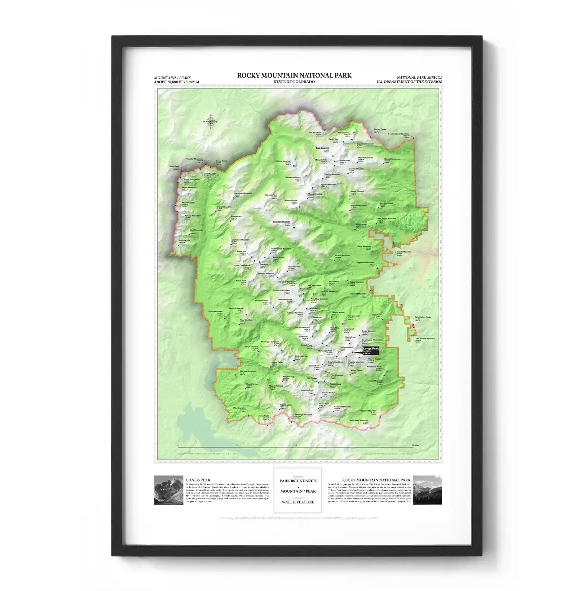
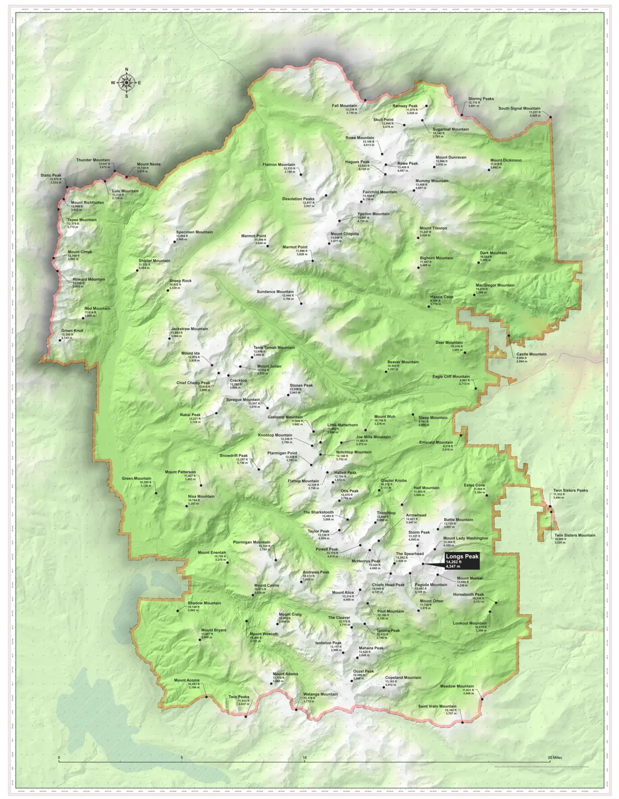
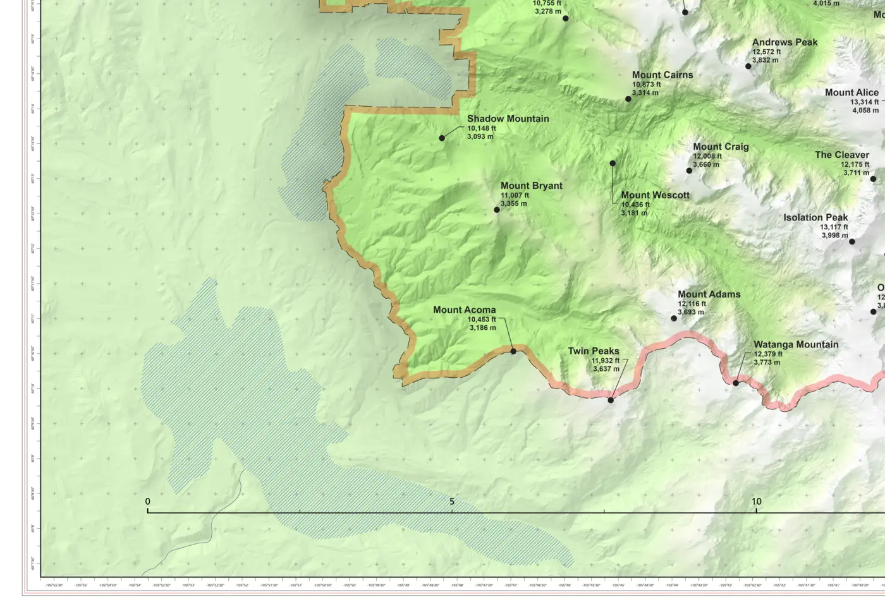
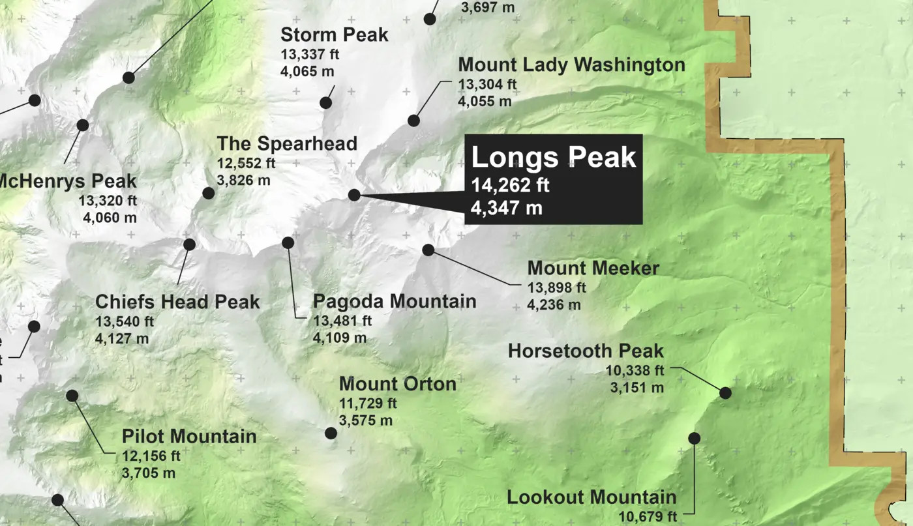
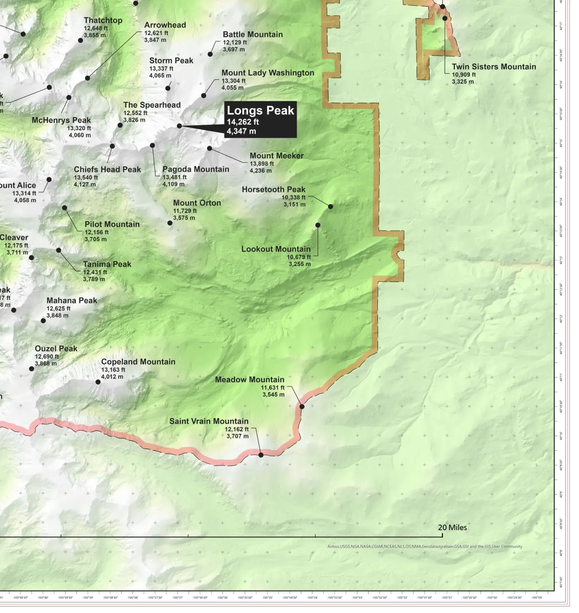
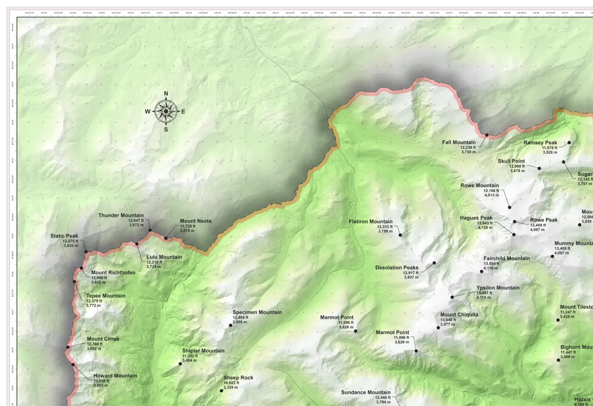

Rocky Mountain National Park
A map of Rocky Mountain National Park showcasing peaks over 11,000 feet, designed with clear symbology and a balanced layout to emphasize elevation and landscape features.
Jason Runnells | May, 2025
Overview
This map of Rocky Mountain National Park highlights mountain peaks above 11,000 feet, using clear symbology, shaded relief, and thoughtful color choices to emphasize elevation and terrain. The layout integrates park boundaries, peak labels, and inset text panels providing context on the park's history and Longs Peak. Designed for clarity and visual balance, the map combines aesthetic appeal with informative cartographic design.






Cartographic Elements
- Symbology: Peaks above 11,000 feet are clearly marked, with consistent symbols and label styles that stand out against the terrain.
- Topography: Shaded relief and subtle contouring give depth and form to the landscape, emphasizing the park's dramatic elevation changes.
- Color: A restrained palette highlights elevation zones and park boundaries without overpowering the natural feel of the map.
- Typography: Mountain names, features, and boundaries are labeled with clean, legible fonts positioned for clarity and minimal overlap.
- Layout: The map includes balanced marginalia and inset panels that provide historical and geographic context without detracting from the main map.
- Boundary Lines: The park's official boundaries are delineated with a clear, contrasting line to help distinguish protected areas.